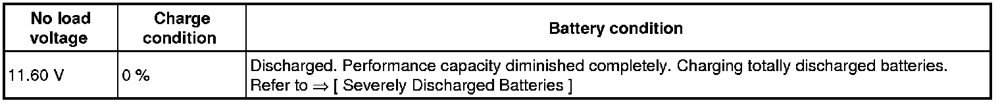
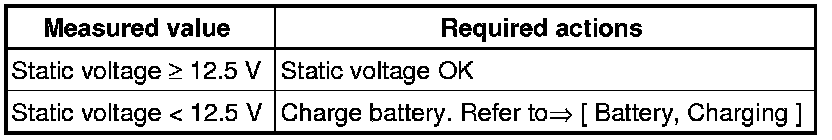

Battery Static Voltage, Vehicles in Storage, Checking
Battery Static Voltage, Vehicles in Storage, Checking
CAUTION!
Risk of injury. Observe warning notes and safety precautions. Refer to --> [ Battery Safety Precautions ] Battery Safety Precautions!
• The static voltage may only be measured on vehicles in storage within the scope of the prescribed maintenance and care work as an assessment criterion for the battery condition.
• The static voltage test serves to determine whether it is necessary to charge the battery on vehicles in storage --> Maintenance tables"Service for vehicles in storage"
Special tools, testers and auxiliary items required
• Hand-Held Multimeter (V.A.G 1526 B)
Test Conditions
The battery may be either charged or discharged for at least 2 days.
- Measure no load voltage of battery with the Hand-Held Multimeter (V.A.G 1526 B).

